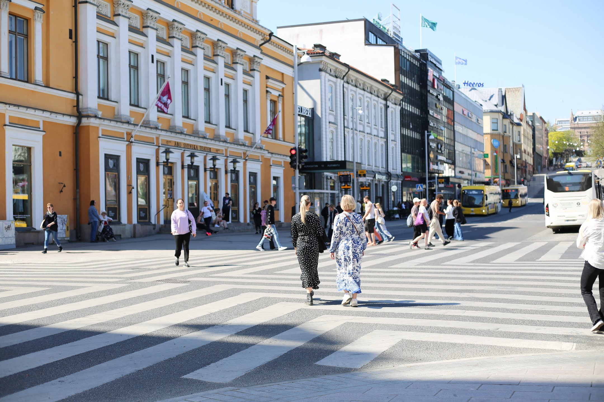
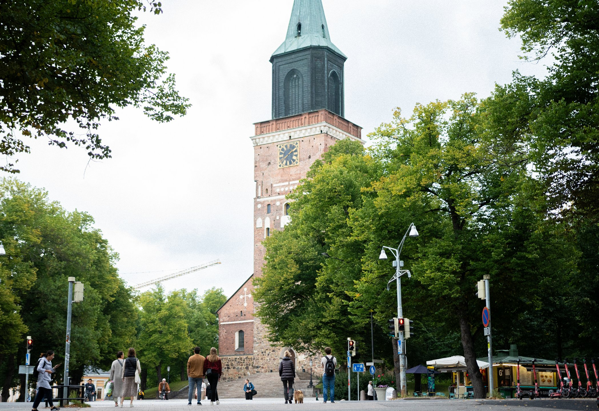
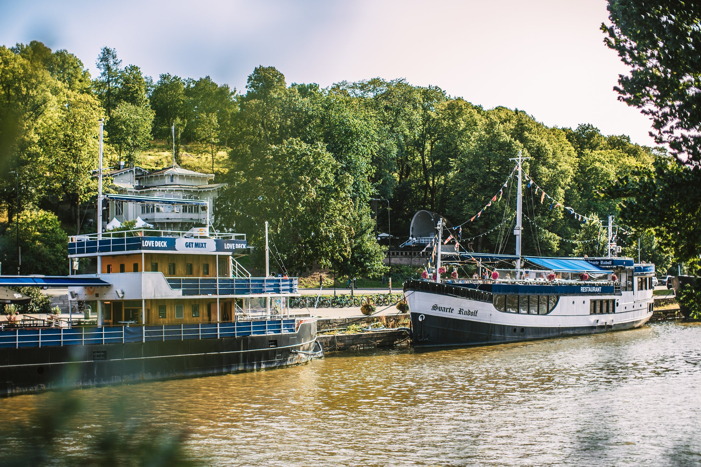

About Turku
Turku—located in the region of Southwest Finland, is one of Finland’s biggest cities. The oldest city of Finland, founded in 1229, is today the dynamic capital of its region, Southwest Finland, an exciting mixture of old and new. Turku is proud of its strong community spirit, innovation, and close cooperation with the institutes of higher education. Turku has a compact size, perfect for exploring the city. You’ll find most hotels, restaurants, and attractions within walking distance of the centre. If you have a chance, visit also the unique and beautiful Turku archipelago!

Modern, yet historic
Turku, the former capital of Finland, lies 165 kilometres west of present-day capital Helsinki. Turku offers a skilled and educated workforce, modern municipal engineering, good international connections and flexible services for companies and businesses. Situated at the mouth of the River Aura, Turku is a major port city today. Turku is known as a bilingual city; around five percent of the population is Swedish-speaking. A great portion of Turku residents are students: every fourth person is either student or professional in higher education institute. Urban life is focused around the river, and some of the most interesting sights are located on its banks, such as the Turku Castle, Finland’s national shrine the Turku Cathedral, and the Old Grand Market Square.

Turku facts
- one of the largest cities in Finland
- the first school in Finland was established in Turku, the old Cathedral school in the 13th century
- two universities and four university of applied sciences
- 40 000 higher education students
- more than 100 nationalities
- declared the Food Capital of Finland
- surrounded by a unique archipelago of thousands of islands and skerries
What to do in Turku?
Explore the interesting mix of urban city culture in Turku and the uniqueness of the breathtaking Archipelago with its 40 000 islands. Turku, the European Capital of Culture 2011, is a vibrant and modern city full of life and activities with a compact size and easy walking distances. Feel the city spirit by walking along the banks of Aura River, the heart and soul of Turku, and visit the Riverboat restaurants along the river shores.
The city is also a must visit place for foodies and is gaining reputation for its splendid restaurant scene – all the way to the point of referring to the city as being the Food Capital of Finland. Furthermore, do not miss to try some local delicacies in the over 120 year old Market Hall. The city also offers a great number of interesting museums as for instance the Luostarinmäki, with its old wooden houses, and the Aboa Vetus Ars Nova Museum where you’ll find both ruins of the medieval Turku as well as contemporary art. The famous Moomins also live in this region; the Moominworld in Naantali is located only 16 kilometres from Turku.

Just outside Turku you’ll find a breathtakingly beautiful and the world’s largest Archipelago, with around 40.000 islands – a spectacular area for various kinds of island hopping excursions with boat, car or by bike. Also, do not miss to explore the closest island to Turku; Ruissalo, which can easily be reached by waterbus from the Aura River during the summer season. Do as locals —bring some local picnic delicacies with you and head to the pure nature of Ruissalo.
See more tips from the Visit Turku website!